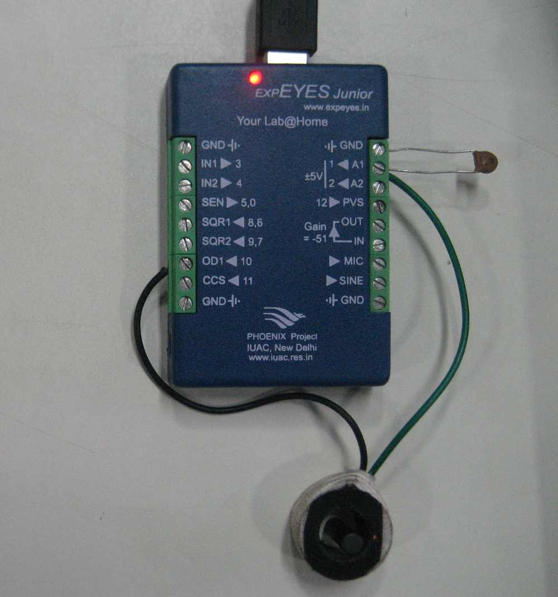
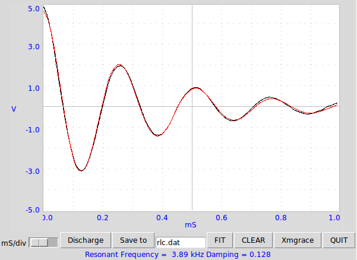

The transient response of LCR circuit is studied by applying a 5->0 volts step and measuring the voltage change across the capacitor. Resonant frequency and damping are extracted by fitting the data with the equation of a damped sinusoid. For and inductor of 130 mH (with a coil resistance of around 600 Ohms) and a capacitor of 0.1 uF, the circuit shows under-damped response.
 